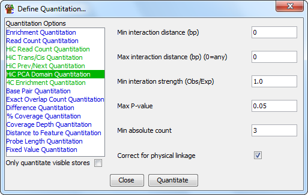

The PCA domain quantitation is a method which can be used to try to identify local interaction domains within a HiC dataset. It constructs a HiC interaction set using the same options as for the HiC heatmap plot, and then performs a principal components analysis of this data to identify the first principal component. Each probe is then quantitated with the eigenvalue for this principal component.

This method of quantitation should allow you to see local interaction domains, which should have similar eigenvalues in a locally clustered region, and should show a sharp shift when a move to a different domain occurs. The efficacy of this type of partitioning strategy is entirely dependent on which factor in your data is identified as the principal component in this analysis.